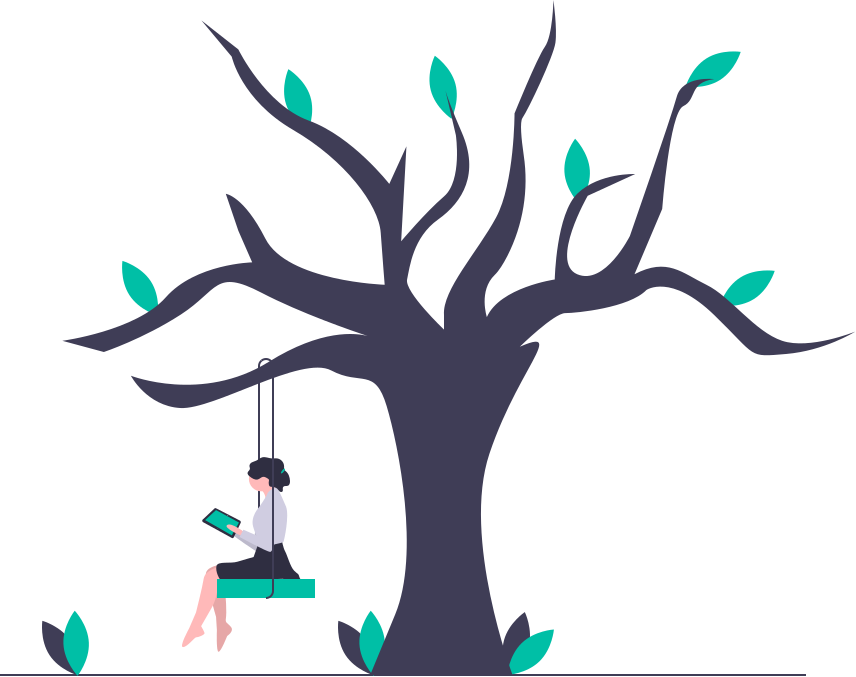
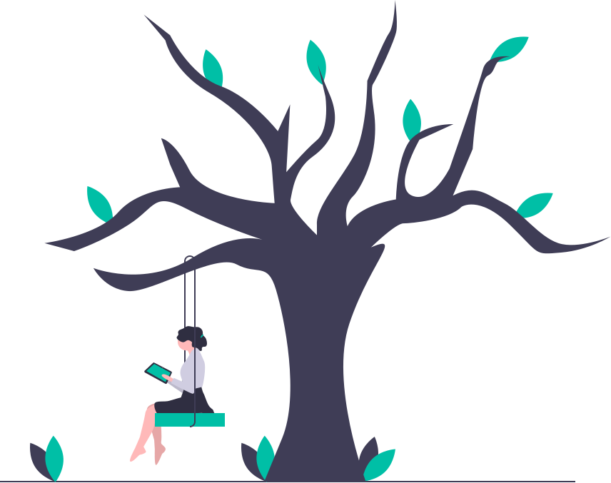
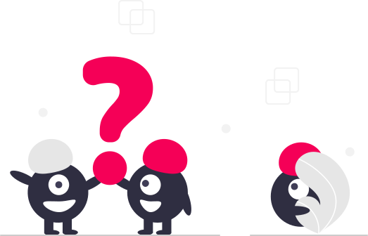
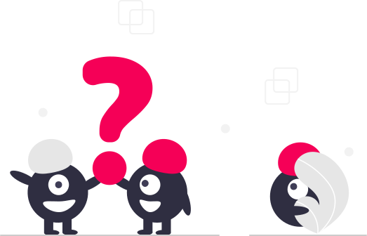

¿Cómo crear nuevos hábitos?
Para crear un hábito nuevo tienes que encontrar primero una señal de activación simple y, después, definir con claridad la recompensa. Por ejemplo, ponerte unas zapatillas de deporte en el mismo momento de llegar a tu casa después de trabajar, puede servir para crear el hábito de salir a correr. La recompensa podría ser la propia satisfacción que produce hacer ejercicio, o comerte después algún dulce mientras ves un programa de televisión que te guste.
Normalmente, crear una señal y definir la recompensa no es suficiente. Si no, sería bastante sencillo hacer ejercicio, comer sano y organizarte productivamente. Lo que refuerza que el ciclo señal-rutina-recompensa se repita lo suficiente, es que exista un fuerte deseo de que llegue la recompensa. A veces, el hecho de asociar una señal a una recompensa hace que el deseo se vaya creando de manera inconsciente. Pero otras veces tendrás que averiguar la manera de despertar ese deseo.
Un hábito, según las teorías cognitivas más actuales, no es únicamente una automatización, sino que incluye a la conciencia, las metas y la motivación del momento. El 40% de nuestras acciones diarias son producto de los hábitos adquiridos, asegura la Universidad de Duke.
Dependiendo de la complejidad, incorporar un nuevo hábito puede demorar entre 18 y 254 días, aunque la mayoría logra hacerlo en 66 días, asegura un estudio de la University College London.
Para consolidar un hábito de estudio es recomendable empezar con sesiones cortas, controlar influencias que afectan el rendimiento -smartphone, redes sociales- y trazar objetivos claros. Un informe de la Dominican University of California asegura que proponerte una meta aumenta tus chances de alcanzarla entre un 20 y un 30%.
Cuando alcances pequeñas metas propuestas a la largo de la jornada, prémiate con un helado, una canción, una caminata corta o algo que mantenga tu motivación para seguir estudiando y llegar a la próxima recompensa.
 



 
